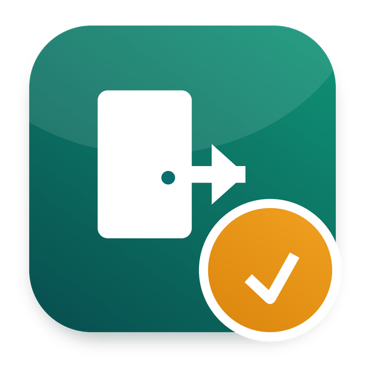

This app is part of Odoo 20 HRMS - Odoo Mates: the whole HR suite in one download, 62 modules for Odoo 20. Payroll, loans, exits and gratuity, documents and signatures, appraisals, shifts, approvals, the employee portal. Download once, install only what you need.
Get Odoo 20 HRMS - Odoo Mates, every app at once →
Resignations and terminations, approved along a flow, cleared by checklist, registered as departures
Part of Odoo 20 HRMS - Odoo Mates · Odoo 20 Community and Enterprise
The employee gives notice, or HR records the exit; the manager then HR approve
Each checklist item gets its people and a to-do due on the last working day
Once all is cleared, HR registers the departure: the contract ends on the last day
Works with Odoo 20 Community and Odoo 20 Enterprise. On Enterprise, it cannot be installed together with the Enterprise Approvals app: both define the same records. Use one or the other.
om_hr_base, om_hr_approval.
Odoo Mates HR
The HR suite of Odoo Mates for Odoo 20: every module installs on its own, the links between them are bridges.
Support: odoomates@gmail.com